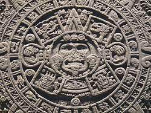
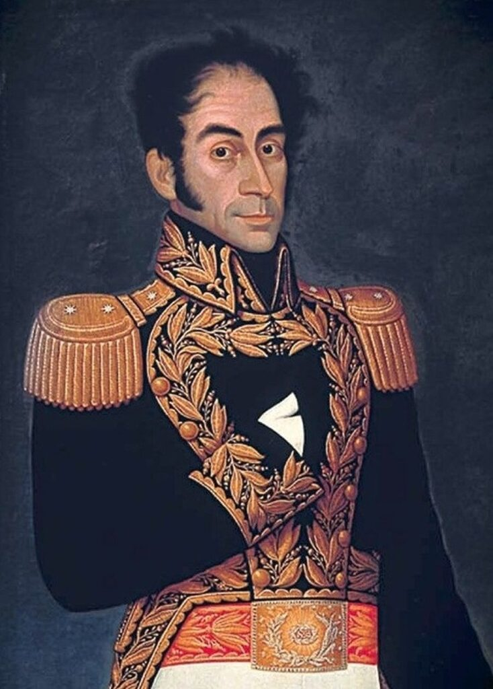
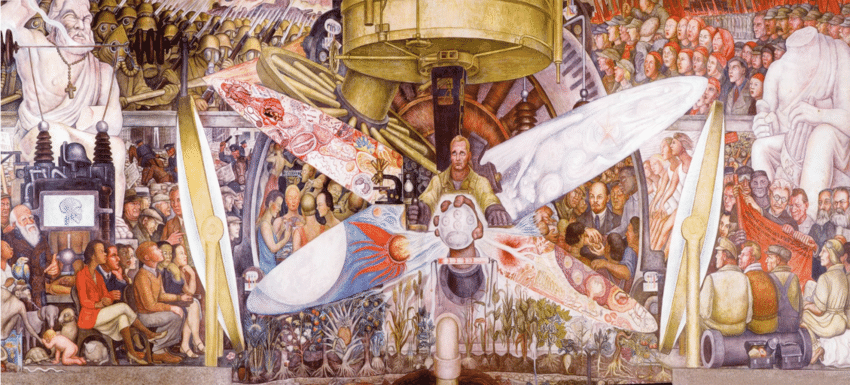
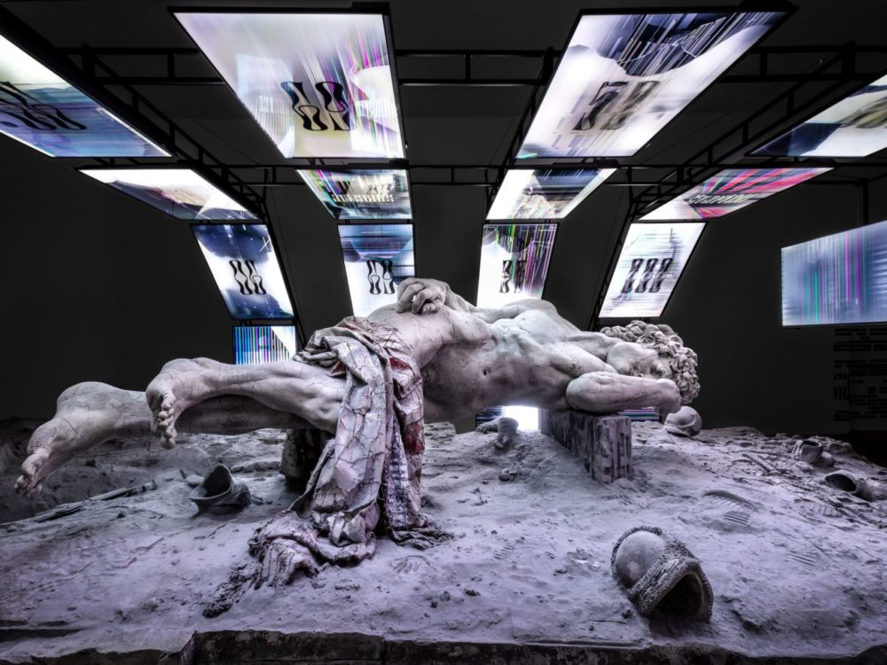

EPOCAS
Antes del siglo XVI
ARTE PRECOLOMBINO
Este periodo abarca las manifestaciones artísticas de las culturas indígenas de América antes de la llegada de los colonizadores europeos en el siglo XVI. Se caracteriza por las obras arquitectónicas, escultóricas y pictóricas de civilizaciones como los mayas, aztecas, incas, entre otras. Las piezas incluyen cerámicas, textiles, joyería, y monumentos, muchas veces ligados a prácticas religiosas y sociales.
Siglos XVI - XIX
ARTE COLONIAL
En América Latina, el Arte Colonial se desarrolló desde la llegada de los colonizadores europeos en el siglo XVI, alrededor de 1520, hasta principios del siglo XIX, coincidiendo con las guerras de independencia (1810-1820).
Siglo XIX - principios del siglo XX
ARTE REPUBLICANO Y ACADEMICISMO
El Arte Republicano y el Academicismo surgieron en América Latina durante el siglo XIX, particularmente tras las independencias nacionales. Este estilo estuvo vigente desde principios del siglo XIX (alrededor de 1820) hasta comienzos del siglo XX (aproximadamente 1910), coincidiendo con la consolidación de las repúblicas latinoamericanas.
Finales del siglo XIX - mediados del siglo XX
Modernismo y vanguardia
El Modernismo comenzó a finales del siglo XIX, alrededor de 1880, y se extendió hasta principios del siglo XX. Las Vanguardias se desarrollaron en las primeras décadas del siglo XX, aproximadamente entre 1910 y 1940, con movimientos como el Cubismo, Futurismo, Dadaísmo y Surrealismo.
Mediados del siglo XX - actualidad
Arte contemporáneo
Se considera que el Arte Contemporáneo comienza después de la Segunda Guerra Mundial, a partir de 1945, y continúa hasta la actualidad. Está caracterizado por la diversidad de estilos y la experimentación con nuevos medios y tecnologías.